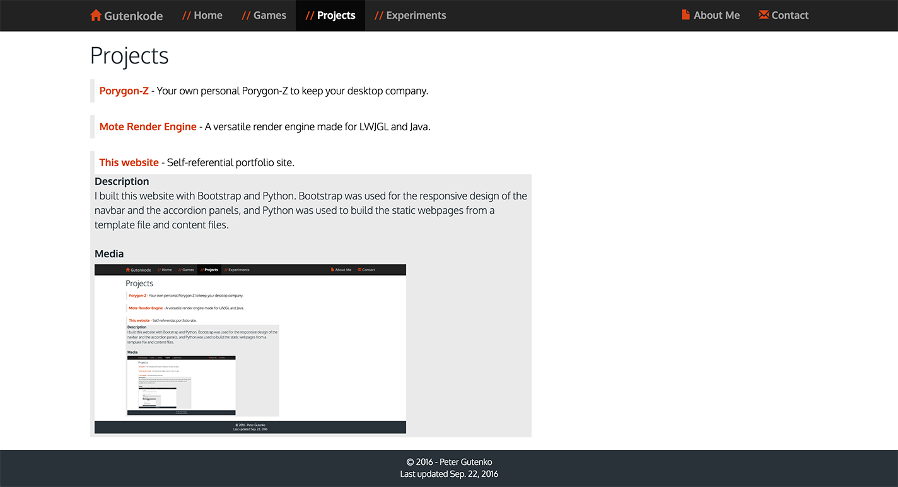
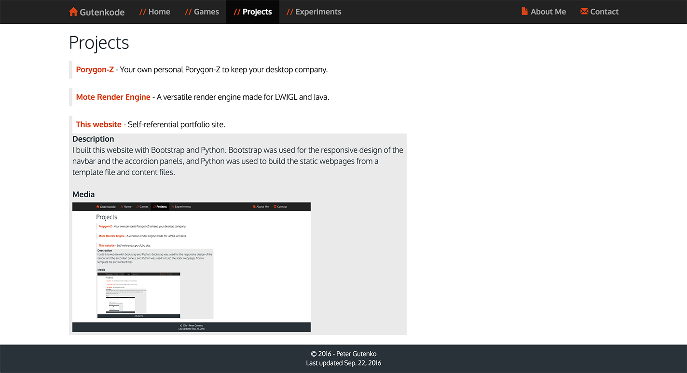

Projects
Porygon-Z - Your own personal Porygon-Z to keep your desktop company.
Description
This project was inspired by Shimeji. The porygon model is rendered in OpenGL, and then displayed on a transparent JFrame to provide an operating system-independent method of rendering. This was the first time I worked with external framebuffers and loading meshes into OpenGL.
Download
Universal
Source Code
Media

This project was inspired by Shimeji. The porygon model is rendered in OpenGL, and then displayed on a transparent JFrame to provide an operating system-independent method of rendering. This was the first time I worked with external framebuffers and loading meshes into OpenGL.
Download
Universal
Source Code
Media
Mote Render Engine - A versatile render engine made for LWJGL and Java.
Description
Mote is a custom render engine built on the LWJGL API for Java. Its primary design goal was to not create a simplified method of using OpenGL, instead encapsulating common and complex functions needed for rendering in OpenGL, including loading texture resources, loading shader programs, managing OpenAL, and providing a basic structure to organize graphics programs, based on a scenegraph. Good knowledge of modern OpenGL and the graphics pipeline in general are required for effective use of the engine. Since the engine doesn't abstract the basic structure of an OpenGL program, it is versatile while also making complex scenes fast to write. It can easily be used to prototype a basic graphics experiment or manage a full game using OpenGL.
A quick overview of the features includes:
Download
You can view the latest version of the source from GitHub.
Mote is a custom render engine built on the LWJGL API for Java. Its primary design goal was to not create a simplified method of using OpenGL, instead encapsulating common and complex functions needed for rendering in OpenGL, including loading texture resources, loading shader programs, managing OpenAL, and providing a basic structure to organize graphics programs, based on a scenegraph. Good knowledge of modern OpenGL and the graphics pipeline in general are required for effective use of the engine. Since the engine doesn't abstract the basic structure of an OpenGL program, it is versatile while also making complex scenes fast to write. It can easily be used to prototype a basic graphics experiment or manage a full game using OpenGL.
A quick overview of the features includes:
- Construct windowed and fullscreen contexts with multisampling and stencil buffer attachments
- Easily load and bind .png images as textures, and 3D texture support
- Easily load shaders and set uniforms
- Construct, manage, and destroy vertex array objects
- Framebuffer objects with support for depth and stencil attachments
- Depth buffers for shadowmap rendering
- Bitmap fonts and utility functions for rendering
- OpenAL source and buffer encapsulation
- .wav and .ogg sound file support
- .obj file loading and parsing into a VBO or VBA
- A scenegraph structure to organize the rendering process
- Support for custom game loop code, or a built-in loop for a constant framereate
- Basic geometry library for common tasks including vectors and planes
Download
You can view the latest version of the source from GitHub.
This website - Self-referential portfolio site.
Description
I built this website with Bootstrap and Python. Bootstrap was used for the responsive design of the navbar and the accordion panels, and Python was used to build the static webpages from a template file and content files.
Media

I built this website with Bootstrap and Python. Bootstrap was used for the responsive design of the navbar and the accordion panels, and Python was used to build the static webpages from a template file and content files.
Media
